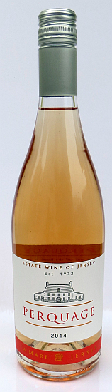

Au pus sîmpl'ye, lé vîn est du jus d'vèrjus fèrmenté et les gens ont grée du vîn d'pis au mains 8,000 ans. Nou-s'a dêfoui du têmouongnage archéologique dans les montangnes des Caucases tch'en est la preuve et i' sembl'ye qu'en Iran étout nou griyait du vîn à chu temps-là. Lé conmèrce du vîn fut pâssé l'tou d'la Mé du Mitan par les Phéniciens et les Grècs épis les Romains pliantîtent des vîngnes dans lus colonnies. Ch'est-i' qu'nou pliantit des vîngnes en Jèrri duthant les temps Gallo-Romains? Nou n'sait pon, mais quand nou dêcouvrit un baté Gallo-Romain tch'avait êffondré à Saint Pièrre Port en Dgèrnésy dans les 280 auprès l'Christ né v'là d'l'êvidence qu'les Îles d'la Manche prannaient part dans l'conmèrce du vîn dans les touos vièrs temps.
Lé vîn a 'té fait sèrvi dans les r'ligions. Nou-s'offrait du vîn ès dgieux et au Bouôn Dgieu. L'vîn fait partie achteu du sèrvice eucharistique Chrêtchien.
Dans la Bibl'ye, Noué fut l'preunmyi à tchultiver des vîngnes auprès la Grande G'lug'gie et en d'vînt soûl:
Génêse 9: 20-21
Noué s'mînt à tchultiver la tèrre et pliantit des vîngnes. I' but du vîn, s'en soûlit et s'êtrav'lit à fîn fraid nu dans sa tente.
Jésû touônnit dé l'ieau en vîn pouor l'mathiage à Cana et but du vîn acanté ses approtis au Drein Soupé.
Viyant qu'lé vîn 'tait nécessaithe pouor les sèrvices Chrêtchiens ch'n'est dgéthe ravissant qu'les monastéthes tchultivaient un tas d'vîngnes pouor en graie du vîn. Et ch'tait un mouaine Bénédictîn, Dom Pièrre Pérignon (1638-1715) tch'avanchit la production d'vîn pétilyant en Champangne (ouaithe qu'i' n'fûsse pon l'înventeux du champangne).
Y'a du vîn tchi pétil'ye, mais y'a un tas d'difféthentes manniéthes dé vîn. Nou peut distîndgi par la couleu: du blianc vîn, du rouoge vîn et du rose vîn; du fort et du ligi; du vîn d'eune manniéthe dé vèrjus ou d'un mêlange.
En Jèrri nou griyait du cidre et d'la biéthe. Ch'fut en 1972 qu'lé preunmié gardîn d'vîngnes pouor la production conmèrciale du vîn fut plianté à La Mathe, Sainte Mathie. D'pis chu temps-là, la compangnie d'La Mathe a êcaloppé san dêmnîn pouor graie du vîn Jèrriais dé difféthentes manniéthes et auve des noms Jèrriais étout: Pèrquage, Brancage...
Dans la littéthatuthe Jèrriaise y'a des mentions du vîn; lé pus èrmèrquabliément ch'est dans la vèrsion des Robaïyat d'Omar Khayyam du Docteu Fraînque Le Maistre dé tchi n'en v'chîn un coupl'ye d'vèrsets:
Car ouaithe qué j'sûsse la difféthence, tréjous,
Entre "Est" et "N'Est Pon", entre "D'ssus" et "D'ssous",
N'y'a rein qué j'aie voulu connaître autant
Comme lé Vîn - ah, lé Vîn et san bouôn goût!
Et à ches drein, eune Forme d'Ange est v'nue
Mé donner à gouôter chu fanmeux Jus:
Lé Jus d'la Vîngne tchi basqu' toute Raisonn'nie,
Tchi nouos fait vaie tout rose et pouor lé mus!
Et y'a étout des ditons:
Solé tchi s'lève matîn,
Femme tchi pâle Latîn,
Et houmme tchi bait trop d'vîn
Né veinnent janmais à bouonne fîn!
Du paîsson dait nagi trais fais - dans la mé, dans l'beurre et dans l'vîn
Viyiz étout: